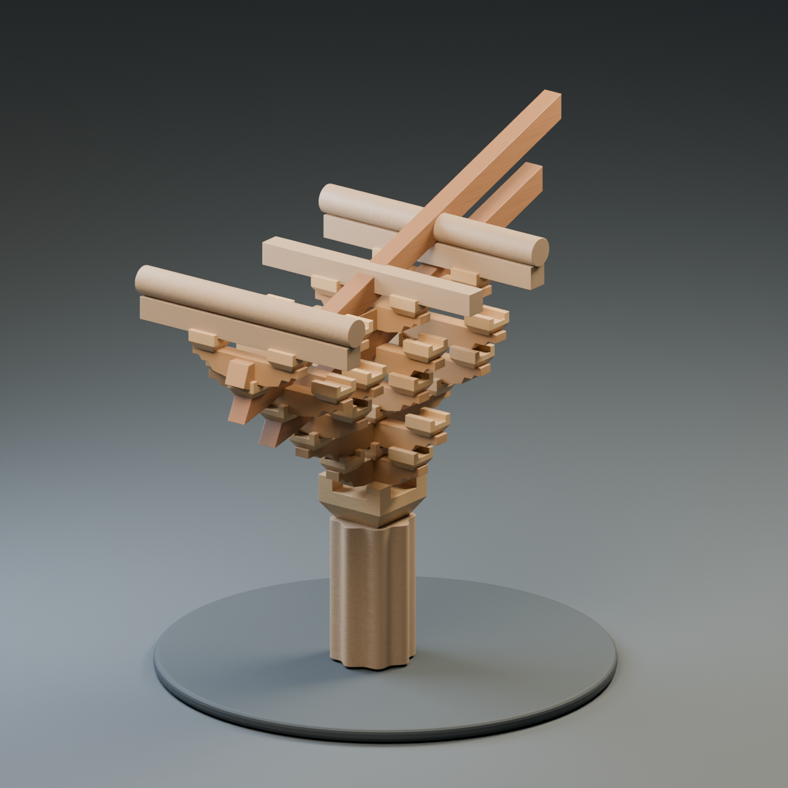

FOUR EXPERIENCES · ONE TIMBER STORY在木构之间，
在木构之间，
发现、看见、动手。
依据《斗拱11_11网站想法》建立的四幕独立互动项目。
前三幕已准备框架说明、视觉交互样稿与素材台账。
第四幕保留空白。每幕可单独进入，适配后续分散设置的景区屏幕。

01 / 科普 · 滚动叙事
一木相接
沿着榫卯与斗拱的发展，
穿行于木构的故事。
02 / 科普 · 三维地图
木构星图
旋转地球、筛选朝代，
探索世界的木构样本。
03 / 游戏 · 限时拼装
小小营造师
60 / 30 / 20 秒，
用指尖搭起三维斗拱。
04
04 / 游戏 · 智力问答
内容预留
可视化题面与进阶问答。
题目、答案和奖励暂空。
制作阶段：框架与视觉交互验证。历史脚本、样本统计与正式三维模型仍需逐项核定。
本地 Three.js 与模型资源已随项目保存；模型加载需通过本地预览服务。